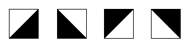

9
Patterns 图案
因为着色器按一个个像素执行，那么无论你重复一个图形多少次，计算的数量仍然是个常数。

本章中我们将综合我们目前所学的并应用在画布上。和前几章一样，我们的策略依然基于乘以空间坐标（0到1之间），这样我们的画的在0到1之间的图形就会重复地形成网格。
"网格提供一种基于人的直觉发明事物的框架，并且可以颠覆。自然的混沌肌理提供一种对比和秩序的迹象。从早期罗马浴场里的陶瓷图案到几何镶嵌，人们那时候就习惯用网格来点缀他们的生活。"10 PRINT, Mit Press, (2013)
首先让我们记住 fract() 函数。它返回一个数的分数部分，本质上是除1的余数（mod(x,1.0)）。换句话说， fract() 返回小数点后的数。 我们单位化的坐标系变量 (st) 已经是 0.0 到 1.0 之间的了。所以像下面这么做并没有必要：
void main(){
vec2 st = gl_FragCoord.xy/u_resolution;
vec3 color = vec3(0.0);
st = fract(st);
color = vec3(st,0.0);
gl_FragColor = vec4(color,1.0);
}
但如果我们放大单位化坐标系 — 比如说3倍 — 我们会得到三组 0 到 1 的线性插值的数列：第一组在 0-1 之间，第二组浮点数在 1-2 之间以及第三组在 2-3 之间的浮点数。
// Author @patriciogv - 2015
#ifdef GL_ES
precision mediump float;
#endif
uniform vec2 u_resolution;
uniform float u_time;
float circle(in vec2 _st, in float _radius){
vec2 l = _st-vec2(0.5);
return 1.-smoothstep(_radius-(_radius*0.01),
_radius+(_radius*0.01),
dot(l,l)*4.0);
}
void main() {
vec2 st = gl_FragCoord.xy/u_resolution;
vec3 color = vec3(0.0);
st *= 3.0; // Scale up the space by 3
st = fract(st); // Wrap around 1.0
// Now we have 9 spaces that go from 0-1
color = vec3(st,0.0);
//color = vec3(circle(st,0.5));
gl_FragColor = vec4(color,1.0);
}
现在是时候在子空间（网格单元的空间）里画点什么了。取消27行的注释。（因为我们等比例放大了x和y坐标，所以不会改变坐标的比例，图形会和预期的一样。）
试试下面的练习来深入理解：
-
把空间乘以不同的数。试试用浮点数，还有分别给x和y不同的系数。
-
把这个平铺技巧做成一个可以反复使用的函数。
-
把画布分成 3 行 3 列。 指出如何定义行和列的线程的，并用这种方式改变显示着的图形。试着做一个井字棋。
在图案内部应用矩阵
鉴于每个细分或者说单元都是我们正在使用的单位化坐标系的小单元，我们可以对每个内部空间施以矩阵变换来平移，旋转和缩放。
// Author @patriciogv ( patriciogonzalezvivo.com ) - 2015
#ifdef GL_ES
precision mediump float;
#endif
// Copyright (c) Patricio Gonzalez Vivo, 2015 - http://patriciogonzalezvivo.com/
// I am the sole copyright owner of this Work.
//
// You cannot host, display, distribute or share this Work in any form,
// including physical and digital. You cannot use this Work in any
// commercial or non-commercial product, website or project. You cannot
// sell this Work and you cannot mint an NFTs of it.
// I share this Work for educational purposes, and you can link to it,
// through an URL, proper attribution and unmodified screenshot, as part
// of your educational material. If these conditions are too restrictive
// please contact me and we'll definitely work it out.
uniform vec2 u_resolution;
uniform float u_time;
#define PI 3.14159265358979323846
vec2 rotate2D(vec2 _st, float _angle){
_st -= 0.5;
_st = mat2(cos(_angle),-sin(_angle),
sin(_angle),cos(_angle)) * _st;
_st += 0.5;
return _st;
}
vec2 tile(vec2 _st, float _zoom){
_st *= _zoom;
return fract(_st);
}
float box(vec2 _st, vec2 _size, float _smoothEdges){
_size = vec2(0.5)-_size*0.5;
vec2 aa = vec2(_smoothEdges*0.5);
vec2 uv = smoothstep(_size,_size+aa,_st);
uv *= smoothstep(_size,_size+aa,vec2(1.0)-_st);
return uv.x*uv.y;
}
void main(void){
vec2 st = gl_FragCoord.xy/u_resolution.xy;
vec3 color = vec3(0.0);
// Divide the space in 4
st = tile(st,4.);
// Use a matrix to rotate the space 45 degrees
st = rotate2D(st,PI*0.25);
// Draw a square
color = vec3(box(st,vec2(0.7),0.01));
// color = vec3(st,0.0);
gl_FragColor = vec4(color,1.0);
}
-
想想怎么让这些图案有趣的动起来。考虑颜色，形状，运动的变换。做三种动画。
-
通过组合不同的形状重新创造更复杂的图案。
- 结合多层图案来制作你自己的 Scottish Tartan Patterns.
偏移图案
So let's say we want to imitate a brick wall. Looking at the wall, you can see a half brick offset on x in every other row. How we can do that?
假如我们想要模仿砖墙。看，下面的墙，你是不是看到一半的砖在x方向上偏移了一半砖的长度，没隔一行偏移一次。我们如何实现？
第一步我们需要知道某行的线程是奇数还是偶数，以为我们可以通过奇偶来决定是否要在x方向上偏移那一行。
_我们需要两段来解决这个问题_
要判断我们的线程是一个奇数行或者偶数行，我们要用 2.0 的 mod() 。 然后根据结果是否大于 1.0 来判断。看一下下面的函数，取消最后两行的注释。
正如你所见，我们可以用一个 三元算符号 （第二行）来检查 2.0 的mod()（余数）小于 1.0 或者类似地，我们用 step() 函数做相同的操作，但（其实）更快。为什么呢？ 因为虽然要知道每个显卡如何优化和编译代码并不容易，但是可以安全地假设内置函数总比非内置的函数快。任何时候你都以调用内置函数，干嘛不用呢！
现在我们有这些找出奇数的方程，这样我们就可以给奇数行一个偏移量，然后就可以把 砖块 做出拼砖的效果。下面代码的第14行便是我们用来“侦测”奇数行，并予之半个单位在x上的偏移的。注意到对偶数行，函数的返回值是 0.0， 0.0 乘以 0.5 得到一个 0.0 的偏移。 但是奇数行我们用函数的返回值， 1.0， 乘以偏移量 0.5，这样便向坐标系的 x 轴偏移了 0.5。
现在试着取消32行的注释 — 拉伸长宽比来模仿“现代砖块”的长宽比。通过取消第40行的的代码，你可以注意到坐标系统是如何看起来映射到红绿色的。
// Author @patriciogv ( patriciogonzalezvivo.com ) - 2015
#ifdef GL_ES
precision mediump float;
#endif
uniform vec2 u_resolution;
uniform float u_time;
vec2 brickTile(vec2 _st, float _zoom){
_st *= _zoom;
// Here is where the offset is happening
_st.x += step(1., mod(_st.y,2.0)) * 0.5;
return fract(_st);
}
float box(vec2 _st, vec2 _size){
_size = vec2(0.5)-_size*0.5;
vec2 uv = smoothstep(_size,_size+vec2(1e-4),_st);
uv *= smoothstep(_size,_size+vec2(1e-4),vec2(1.0)-_st);
return uv.x*uv.y;
}
void main(void){
vec2 st = gl_FragCoord.xy/u_resolution.xy;
vec3 color = vec3(0.0);
// Modern metric brick of 215mm x 102.5mm x 65mm
// http://www.jaharrison.me.uk/Brickwork/Sizes.html
// st /= vec2(2.15,0.65)/1.5;
// Apply the brick tiling
st = brickTile(st,5.0);
color = vec3(box(st,vec2(0.9)));
// Uncomment to see the space coordinates
// color = vec3(st,0.0);
gl_FragColor = vec4(color,1.0);
}
-
试着根据时间变化对偏移量做动画。
-
另做一个动画，让偶数行向左移，奇数行向右移动。
-
能不能根据列重复这样的效果？
-
试着结合
x和y轴的偏移来得到下面这样的效果：
Truchet 瓷砖
目前我们学了如何区分奇数行/列或偶数行/列，（类似的），（我们也）可能再用（这个技巧）根据位置来设计元素。 考虑到 Truchet Tiles 的例子，即一个单一设计元素可以以四种不同的方式呈现：

通过改变对角瓷砖的图案，便可能组成无限种复杂设计的可能。

仔细观察 rotateTilePattern() 函数, 它把坐标空间细分成四个单元并赋予每一个旋转值。
// Author @patriciogv ( patriciogonzalezvivo.com ) - 2015
#ifdef GL_ES
precision mediump float;
#endif
#define PI 3.14159265358979323846
uniform vec2 u_resolution;
uniform float u_time;
vec2 rotate2D (vec2 _st, float _angle) {
_st -= 0.5;
_st = mat2(cos(_angle),-sin(_angle),
sin(_angle),cos(_angle)) * _st;
_st += 0.5;
return _st;
}
vec2 tile (vec2 _st, float _zoom) {
_st *= _zoom;
return fract(_st);
}
vec2 rotateTilePattern(vec2 _st){
// Scale the coordinate system by 2x2
_st *= 2.0;
// Give each cell an index number
// according to its position
float index = 0.0;
index += step(1., mod(_st.x,2.0));
index += step(1., mod(_st.y,2.0))*2.0;
// |
// 2 | 3
// |
//--------------
// |
// 0 | 1
// |
// Make each cell between 0.0 - 1.0
_st = fract(_st);
// Rotate each cell according to the index
if(index == 1.0){
// Rotate cell 1 by 90 degrees
_st = rotate2D(_st,PI*0.5);
} else if(index == 2.0){
// Rotate cell 2 by -90 degrees
_st = rotate2D(_st,PI*-0.5);
} else if(index == 3.0){
// Rotate cell 3 by 180 degrees
_st = rotate2D(_st,PI);
}
return _st;
}
void main (void) {
vec2 st = gl_FragCoord.xy/u_resolution.xy;
st = tile(st,3.0);
st = rotateTilePattern(st);
// Make more interesting combinations
// st = tile(st,2.0);
// st = rotate2D(st,-PI*u_time*0.25);
// st = rotateTilePattern(st*2.);
// st = rotate2D(st,PI*u_time*0.25);
// step(st.x,st.y) just makes a b&w triangles
// but you can use whatever design you want.
gl_FragColor = vec4(vec3(step(st.x,st.y)),1.0);
}
-
注释，取消注释，以及复制第69到72行来创作新的设计。
-
把黑白三角变成其他元素，例如：半圆，旋转的方形或直线。
-
编写根据元素自身位置旋转的图形代码。
-
创作一个根据其位置改变其他属性的图案。
-
想想其他能用这章原理的案例，不一定是图案. (例: 易经卦)
制定自己的规则
制作程序图案是种寻找最小可重复元素的古老练习（灵修）。我们作为长时间使用网格和图案来装饰织物、地面和物品的镶边物种：从古希腊的弯曲图案，到中国的窗栅设计，重复和变化的愉悦吸引我们的想象。花些时间浏览 decorative patterns 并看看在漫长的历史里，艺术家和设计师是如何寻找在秩序的预测性和（由）混沌和衍变（产生）的惊奇之间的边界的。从阿拉伯几何图案，到斑斓的非洲编制艺术，这里有一整个图案的宇宙要学习。

这章我们就结束算法绘图部分了。在接下来的章节，我们会学习如何把熵（其实就是混乱和随机的意思）加入到我们的着色器中来产生生成设计。